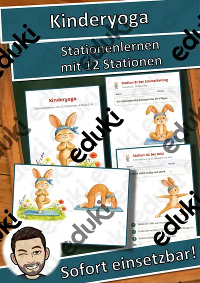
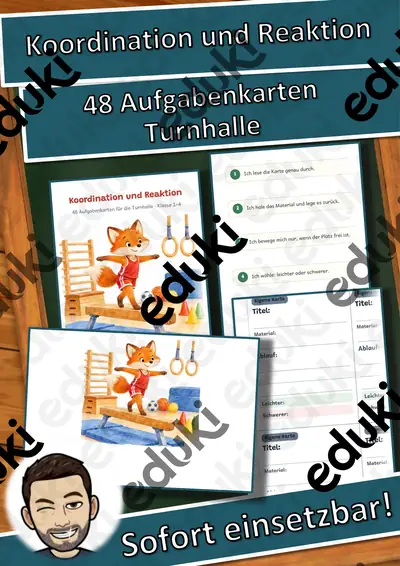

Materialpaket Lesespurgeschichten Sport Klasse 1: 9 Lesespuren mit Rätselaufgaben, dreifach differenziert

Lesespur: Mein Sporttag: Abschluss-Sportfest mit Spielstationen – Lesespurgeschichte mit Rätseln (Klasse 1)

Lesespur: Bewegungslandschaft: ein Hindernisparcours aus Alltagsdingen – Lesespurgeschichte mit Rätseln (Klasse 1)

Lesespur: Fang- und Laufspiele: flitzen, ausweichen, abklatschen – Lesespurgeschichte mit Rätseln (Klasse 1)

Lesespur: Bewegungsbaustelle: bauen, klettern, rutschen, springen – Lesespurgeschichte mit Rätseln (Klasse 1)

Lesespur: Kleine Spiele auf dem Pausenhof: fangen, hüpfen, mitmachen – Lesespurgeschichte mit Rätseln (Klasse 1)

Lesespur: Seilspringen: hüpfen, schwingen, im Takt springen – Lesespurgeschichte mit Rätseln (Klasse 1)

Lesespur: Gleichgewicht: balancieren, wackeln, sicher stehen – Lesespurgeschichte mit Rätseln (Klasse 1)

Lesespur: Ballspiele: rollen, prellen, werfen, fangen – Lesespurgeschichte mit Rätseln (Klasse 1)

Lesespur: Fair spielen: gewinnen und verlieren lernen – Lesespurgeschichte mit Rätseln (Klasse 1)

Kinderyoga: Stationenlernen mit 12 Stationen

Koordination und Reaktion: 48 Aufgabenkarten Turnhalle
Keine Materialien gefunden – versuch einen anderen Suchbegriff oder Filter.